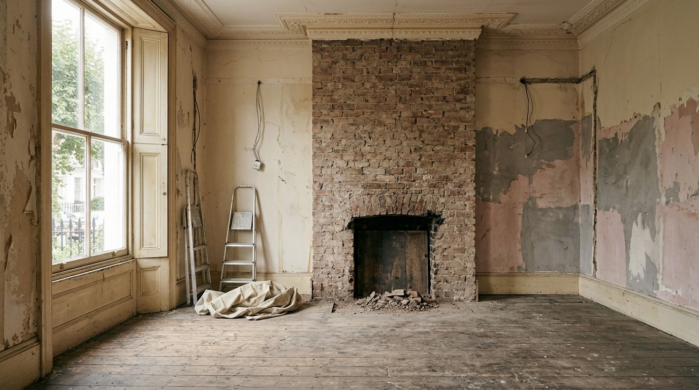

Victorian houses, rebuilt for light
Architectural renovation, bespoke joinery, and quiet residential interiors across London and Bath.
Spaces shaped by proportion, light, and honest craft
We take on six full residential commissions each year, working from structural strip-out through bespoke joinery, stone masonry, and lighting specification.
Every room begins with daylight orientation and the original bones of the building, pairing breathable mineral limewash, Herefordshire oak, and honed limestone so a house settles calmly with age.

Arundel Terrace, stripped brick to handover
Drag across the room to compare week one strip-out against our completed fumed oak shelving, limewash walls, and carved Bath limestone surround.

Selected commissions
Hover or select any house to inspect the finished rooms across London and Somerset.


Eighteen weeks, keys to handover
Counted from the Monday our site team takes possession of the house.
Arrange an on-site feasibility visit
Share the street, era of the house, and the works you are considering. Our principal architect visits within ten days to review layout, natural light, and realistic build budget.